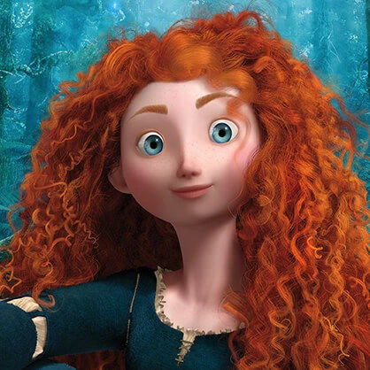
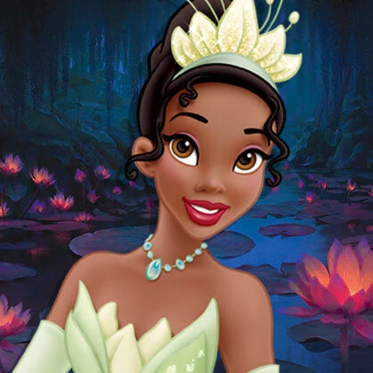

Принцессы

Ариэль — младшая из семи дочерей морского короля Тритона, очарованная миром людей. Любопытная Русалочка проводит свободное время, исследуя затонувшие корабли в поисках человеческих артефактов для своей тайной коллекции.
У Ариэль очень независимый характер, поэтому она часто не слушается отца и уплывает из подводного дворца в одиночку или с лучшим другом Флаундером и крабом Себастьяном, которому Тритон приказал следить за своей беззаботной дочерью. Когда Ариэль влюбляется в принца Эрика, она проявляет настойчивость и жертвует самым дорогим, чтобы быть рядом с ним.

Золушка — добрая и внимательная принцесса. Она заботится об окружающих и дружит с животными, которые всегда приходят к ней на помощь в трудную минуту.
Трудолюбивая Золушка день напролёт занимается работой по дому, чтобы угодить своей мачехе и сводным сестрам, но она не позволяет печалям и невзгодам взять над ней верх. Отважная девушка искренне верит в чудеса и не боится следовать за своей мечтой, несмотря на трудности.

Белоснежка покоряет всех своей безграничной добротой и неземной красотой. Милая и заботливая, принцесса всегда готова прийти на помощь — этими качествами и воспользовалась Злая Королева, мачеха Белоснежки, чтобы сжить со света свою падчерицу.
Белоснежка, вынужденная покинуть родной замок и прятаться в лесу, не поддаётся отчаянию и старается сохранять оптимизм. Благодаря своей вере в лучшее, она встречает верных друзей — семерых гномов, и находит свою любовь.

Имя Белль в переводе с французского означает «красивая», и все жители деревушки, где она живёт, готовы подтвердить, что эта юная особа — самая прекрасная девушка в мире. Однако красота не единственное, что отличает Белль. Больше всего на свете любознательная девушка любит книги, из которых она узнает о дальних странах и удивительных приключениях.
Белль — смелая и решительная, она готова пожертвовать всем ради своих близких. Искренность и покладистый характер помогают ей видеть добро и красоту в каждом, даже в Чудовище…

Дочь короля Стефана и королевы Лии, благородная Аврора до шестнадцати лет даже не подозревала, что является принцессой. Аврора — веселая, добродушная и мечтательная юная девушка, которую с младенчества воспитывали в лесной избушке три феи: Флора, Фауна и Меривеза, оберегая её от страшного заклятия волшебницы Малефисенты.
Накануне шестнадцатилетия Аврора встречает свою любовь, но укол о веретено приводит заклятие в действие, и девушка засыпает глубоким сном. Снять заклятие сможет только поцелуй истинной любви.

Принцесса Жасмин мечтает о свободе и очень хочет увидеть весь мир, но заботливый папа-султан не позволяет ей выходить даже за стены дворца. Решительная принцесса сбегает на поиски своего счастья, а случайное знакомство с Аладдином открывает для неё дверь в мир приключений, о которых она раньше могла только мечтать.
Открытая и смелая, Жасмин не боится отстаивать свои убеждения и бороться за собственное счастье. Щедрая принцесса заботится о благополучии жителей Аграбы, а ее мудрые советы помогают султану править страной.

Отважная и свободолюбивая красавица Мулан — дочь опытного китайского воина Фа Зу, от которого она унаследовала любовь к родине и готовность защищать ее. Верная идеалам, Мулан в мужском обличье отправляется на войну вместо отца.
Благодаря мужеству и отваге, а также верному спутнику — маленькому дракону Мушу, принцесса героически справляется с множеством испытаний, чтобы спасти Китай, вернуться домой к родным и, конечно же, найти свою любовь.

Покахонтас — дочь индейского вождя. Она воплощает в себе главные черты своего племени: смелость, свободолюбие, любовь к земле и заботливое отношение ко всему живому. Она живёт в полной гармонии с природой, и ей нравится исследовать мир вокруг себя.
Когда в места, обжитые её племенем, прибывают англичане, неравнодушная принцесса делает все, что в её силах, чтобы предотвратить войну. А ещё открывает новые, неведомые раньше чувства, на которые способно её сердце...

Рапунцель до шестнадцати лет живёт в высокой башне, лишь воображая, как выглядит окружающий мир, и проводит все своё время, занимаясь творчеством и играя с лучшим другом — хамелеоном Паскалем. Целеустремлённая и любознательная, Рапунцель строит планы, как выбраться из башни, увидеть мир и раскрыть загадку таинственных фонариков в небе.
Её встреча с Флином Райдером становится судьбоносной: они вместе отправляются навстречу долгожданным приключениям и исполняют самые смелые мечты Рапунцель!

Мерида — дочь короля, но её сердце жаждет приключений. Храброй принцессе больше нравится стрелять из лука, скакать верхом и исследовать окружающий мир, чем послушно сидеть в замке. Сильная и самоуверенная, Мерида никому не позволит распоряжаться своей жизнью.
Густые рыжие волосы Мериды так же непокорны, как и сама принцесса. Королева Элинор все время пытается их расчесать и спрятать под мантилью, но любая её попытка обречена на провал. Несмотря на свободолюбивый характер, Мерида чувствует ответственность за свою семью и сделает все, чтобы ее родные были счастливы.

Тиана мечтает выполнить обещание, данное отцу, и открыть собственный ресторан. Чтобы накопить нужную сумму, она работает так много, что забывает о других важных вещах: любви, семье, развлечениях.
Целеустремлённая Тиана считает, что сможет всего добиться только своим упорным трудом. Но судьба распоряжается иначе: Тиана целует принца-лягушку и отправляется вместе с ним в удивительное приключение по хранящим множество тайн рекам и болотам Луизианы.